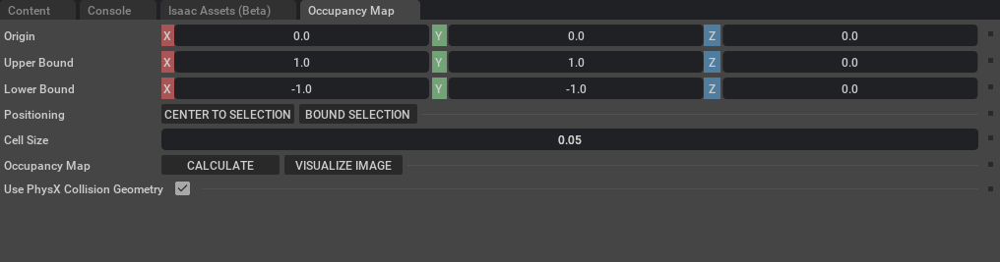

[isaacsim.asset.gen.omap] Isaac Sim Occupancy Map#
Version: 2.3.1
Overview#

The Isaac Sim Occupancy Map extension provides tools for generating 2D and 3D occupancy maps from USD stages. These maps represent spatial information about environments for robotics applications such as navigation, path planning, and collision avoidance.
Features#
2D and 3D Map Generation: Create both 2D projections and full 3D volumetric occupancy maps
PhysX-Based Collision Detection: Leverages PhysX for accurate collision geometry detection
Configurable Resolution: Adjustable cell size for different map resolutions
Flexible Bounds: Define custom mapping regions with origin and boundary settings
Python and C++ API: Access functionality from both Python and C++
Efficient Storage: Uses octomap library for efficient spatial data representation
Installation#
This extension is part of Isaac Sim. To enable it:
Open Isaac Sim
Go to
Window > ExtensionsSearch for
isaacsim.asset.gen.omapEnable the extension
Usage#
Basic Usage (Python)#
import omni.physx
from isaacsim.asset.gen.omap.bindings import _omap
# Get PhysX interface and stage
physx = omni.physx.get_physx_interface()
stage_id = omni.usd.get_context().get_stage_id()
# Create generator
generator = _omap.Generator(physx, stage_id)
# Configure settings
generator.update_settings(
0.05, # cell_size: 5cm resolution
1.0, # occupied_value
0.0, # unoccupied_value
0.5 # unknown_value
)
# Set mapping region
generator.set_transform(
(0, 0, 0), # origin
(-5, -5, 0), # min_bound
(5, 5, 2) # max_bound
)
# Generate 2D map
generator.generate2d()
# Get results
occupied_positions = generator.get_occupied_positions()
buffer = generator.get_buffer()
dimensions = generator.get_dimensions()
Using the Interface API#
from isaacsim.asset.gen.omap.bindings import _omap
from isaacsim.asset.gen.omap.utils import update_location
# Acquire interface
om = _omap.acquire_omap_interface()
# Set parameters
om.set_cell_size(0.05)
update_location(om, (0, 0, 0), (-5, -5, 0), (5, 5, 2))
# Generate map
om.generate()
# Get results
positions = om.get_occupied_positions()
buffer = om.get_buffer()
# Release when done
_omap.release_omap_interface(om)
Utility Functions#
The extension provides utility functions for common operations:
from isaacsim.asset.gen.omap.utils import (
compute_coordinates,
generate_image,
update_location
)
# Compute image coordinates
top_left, top_right, bottom_left, bottom_right, coords = compute_coordinates(om, cell_size=0.05)
# Generate colored visualization
image = generate_image(
om,
occupied_col=[0, 0, 0, 255], # Black
unknown_col=[127, 127, 127, 255], # Gray
freespace_col=[255, 255, 255, 255] # White
)
API Reference#
Generator Class#
Main class for generating occupancy maps.
Constructor: Generator(physx_ptr, stage_id)
physx_ptr: PhysX interface pointerstage_id: USD stage identifier
Methods:
update_settings(cell_size, occupied_value, unoccupied_value, unknown_value): Configure map parametersset_transform(origin, min_bound, max_bound): Define mapping regiongenerate2d(): Generate 2D occupancy mapgenerate3d(): Generate 3D occupancy mapget_occupied_positions(): Get positions of occupied cellsget_free_positions(): Get positions of free cellsget_min_bound(): Get minimum boundary coordinatesget_max_bound(): Get maximum boundary coordinatesget_dimensions(): Get map dimensions in cellsget_buffer(): Get raw occupancy dataget_colored_byte_buffer(occupied, unoccupied, unknown): Get RGBA visualization buffer
OccupancyMap Interface#
Plugin interface for occupancy map functionality.
Methods:
generate(): Generate the occupancy mapupdate(): Update visualizationset_transform(origin, min_point, max_point): Set mapping transformset_cell_size(cell_size): Set cell resolutionget_occupied_positions(): Get occupied cell positionsget_free_positions(): Get free cell positionsget_min_bound(): Get minimum boundsget_max_bound(): Get maximum boundsget_dimensions(): Get dimensionsget_buffer(): Get occupancy bufferget_colored_byte_buffer(occupied, unoccupied, unknown): Get colored buffer
Configuration#
Cell Size#
The cell size determines the resolution of the occupancy map:
Smaller cells = Higher resolution, more memory/computation
Larger cells = Lower resolution, less memory/computation
Default: 0.05 meters (5cm)
Recommended range: 0.01m to 0.5m depending on application
Mapping Bounds#
Define the region to map:
Origin: Reference point for the map (typically robot position)
Min Bound: Lower corner relative to origin
Max Bound: Upper corner relative to origin
Occupancy Values#
Three types of cells:
Occupied (default: 1.0): Contains obstacles
Unoccupied (default: 0.0): Known free space
Unknown (default: 0.5): Unexplored or unreachable areas
Examples#
Simple Room Mapping#
# Map a 10m x 10m room at 5cm resolution
generator.update_settings(0.05, 1.0, 0.0, 0.5)
generator.set_transform((0, 0, 0), (-5, -5, 0), (5, 5, 2))
generator.generate2d()
High-Resolution Local Map#
# Map a 2m x 2m area at 1cm resolution
generator.update_settings(0.01, 1.0, 0.0, 0.5)
generator.set_transform((0, 0, 0), (-1, -1, 0), (1, 1, 1))
generator.generate2d()
3D Volumetric Map#
# Generate full 3D map
generator.update_settings(0.1, 1.0, 0.0, 0.5)
generator.set_transform((0, 0, 0), (-5, -5, -2), (5, 5, 2))
generator.generate3d()
Performance Considerations#
2D vs 3D: 2D mapping is significantly faster for planar navigation
Cell Size: Doubling cell size reduces memory/computation by ~4x (2D) or ~8x (3D)
Bounds: Limit mapping area to only what’s needed
PhysX Geometry: Use collision approximations for faster results
Troubleshooting#
Empty Map Generated#
Problem: get_buffer() returns empty array
Solutions:
Ensure PhysX scene is present in stage
Verify collision geometry exists on objects
Check that bounds encompass the scene
Confirm timeline is playing during generation
Performance Issues#
Problem: Map generation is slow
Solutions:
Increase cell size
Reduce mapping bounds
Use 2D instead of 3D mapping
Enable PhysX collision approximations
Incorrect Occupancy#
Problem: Objects not appearing as occupied
Solutions:
Verify objects have collision geometry
Check object visibility
Ensure bounds are set correctly
Confirm cell size is appropriate for object sizes
Additional Resources#
Enable Extension#
The extension can be enabled (if not already) in one of the following ways:
Define the next entry as an application argument from a terminal.
APP_SCRIPT.(sh|bat) --enable isaacsim.asset.gen.omap
Define the next entry under [dependencies] in an experience (.kit) file or an extension configuration (extension.toml) file.
[dependencies]
"isaacsim.asset.gen.omap" = {}
Open the Window > Extensions menu in a running application instance and search for isaacsim.asset.gen.omap.
Then, toggle the enable control button if it is not already active.
Python API#
Generator for creating occupancy maps from USD stages. |
- class Generator(
- self: isaacsim.asset.gen.omap.bindings._omap.Generator,
- arg0: omni::physx::IPhysx,
- arg1: int,
Bases:
pybind11_objectGenerator for creating occupancy maps from USD stages.
This class is used to generate an occupancy map for a USD stage. Assuming the stage has collision geometry information, it can produce 2D or 3D representations of the environment’s occupied and free space.
- None#
Example
>>> import omni >>> from isaacsim.asset.gen.omap.bindings import _omap >>> >>> physx = omni.physx.get_physx_interface() >>> stage_id = omni.usd.get_context().get_stage_id() >>> >>> generator = _omap.Generator(physx, stage_id) >>> # 0.05m cell size, output buffer will have 4 for occupied cells, >>> # 5 for unoccupied, and 6 for cells that cannot be seen >>> # this assumes your usd stage units are in m, and not cm >>> generator.update_settings(.05, 4, 5, 6) >>> # Set location to map from and the min and max bounds to map to >>> generator.set_transform((0, 0, 0), (-2, -2, 0), (2, 2, 0)) >>> generator.generate2d() >>> # Get locations of the occupied cells in the stage >>> points = generator.get_occupied_positions() >>> # Get computed 2d occupancy buffer >>> buffer = generator.get_buffer() >>> # Get dimensions for 2d buffer >>> dims = generator.get_dimensions()
Initialize a new Generator instance.
- Parameters:
physx_ptr – Pointer to PhysX interface used for collision detection.
stage_id – Stage ID for the USD stage to map.
- Returns:
A new Generator instance.
- __init__(
- self: isaacsim.asset.gen.omap.bindings._omap.Generator,
- arg0: omni::physx::IPhysx,
- arg1: int,
Initialize a new Generator instance.
- Parameters:
physx_ptr – Pointer to PhysX interface used for collision detection.
stage_id – Stage ID for the USD stage to map.
- Returns:
A new Generator instance.
- generate2d( ) None#
Generate a 2D occupancy map.
Generates a map based on the settings and transform set. Assumes that a 2D map is generated and flattens the computed data.
- Parameters:
None
- Returns:
None
- generate3d( ) None#
Generate a 3D occupancy map.
Generates a map based on the settings and transform set. Creates a full 3D volumetric representation of the scene’s occupancy.
- Parameters:
None
- Returns:
None
- get_buffer( ) List[float]#
Get the raw occupancy buffer.
- Returns:
- 2D array containing values for each cell in the occupancy map.
Values correspond to the occupancy state of each cell (occupied, unoccupied, or unknown) as configured in update_settings().
- Return type:
list
- get_colored_byte_buffer(
- self: isaacsim.asset.gen.omap.bindings._omap.Generator,
- arg0: carb::Int4,
- arg1: carb::Int4,
- arg2: carb::Int4,
Generate a colored visualization buffer.
Creates an RGBA buffer for visualization purposes, where each cell is colored according to its occupancy state.
- Parameters:
occupied_color (tuple) – RGBA Value used to denote an occupied cell.
unoccupied_color (tuple) – RGBA Value used to denote an unoccupied cell.
unknown_color (tuple) – RGBA Value used to denote unknown areas that could not be reached.
- Returns:
- Flattened buffer containing list of RGBA values for each pixel.
Can be used to render as image directly.
- Return type:
list
- get_dimensions( ) carb::Int3#
Get the dimensions of the map in cell units.
- Returns:
Dimensions for output buffer (width, height, depth).
- Return type:
tuple
- get_free_positions( ) List[carb::Float3]#
Get positions of all free (unoccupied) cells.
- Returns:
- List of 3D points in stage coordinates from the generated map,
containing free locations.
- Return type:
list
- get_max_bound( ) carb::Float3#
Get the maximum boundary point of the map.
- Returns:
Maximum bound for generated occupancy map in stage coordinates.
- Return type:
tuple
- get_min_bound( ) carb::Float3#
Get the minimum boundary point of the map.
- Returns:
Minimum bound for generated occupancy map in stage coordinates.
- Return type:
tuple
- get_occupied_positions( ) List[carb::Float3]#
Get positions of all occupied cells.
- Returns:
- List of 3D points in stage coordinates from the generated map,
containing occupied locations.
- Return type:
list
- set_transform(
- self: isaacsim.asset.gen.omap.bindings._omap.Generator,
- arg0: carb::Float3,
- arg1: carb::Float3,
- arg2: carb::Float3,
Set origin and bounds for mapping.
- Parameters:
origin (tuple of float) – Origin in stage to start mapping from, must be in unoccupied space.
min_bound (tuple of float) – Minimum bound to map up to.
max_bound (tuple of float) – Maximum bound to map up to.
- Returns:
None
- update_settings(
- self: isaacsim.asset.gen.omap.bindings._omap.Generator,
- arg0: float,
- arg1: float,
- arg2: float,
- arg3: float,
Update the settings used for generating the occupancy map.
- Parameters:
cell_size (float) – Size of the cell in stage units, resolution of the grid.
occupied_value (float) – Value used to denote an occupied cell.
unoccupied_value (float) – Value used to denote an unoccupied cell.
unknown_value (float) – Value used to denote unknown areas that could not be reached from the starting location.
- Returns:
None